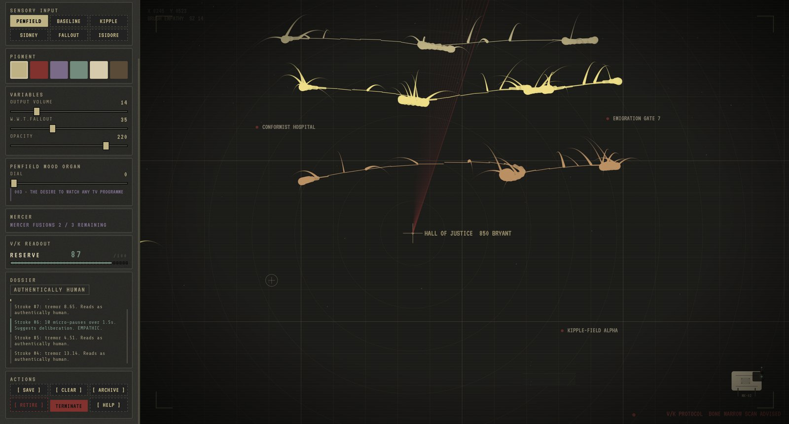
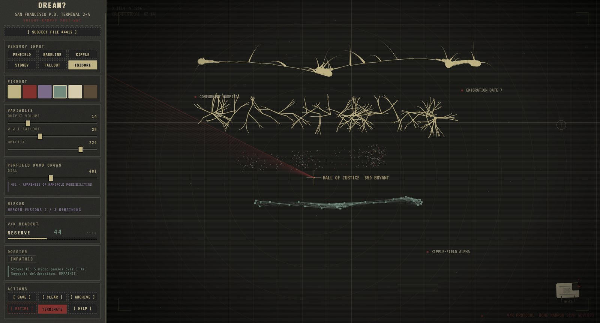
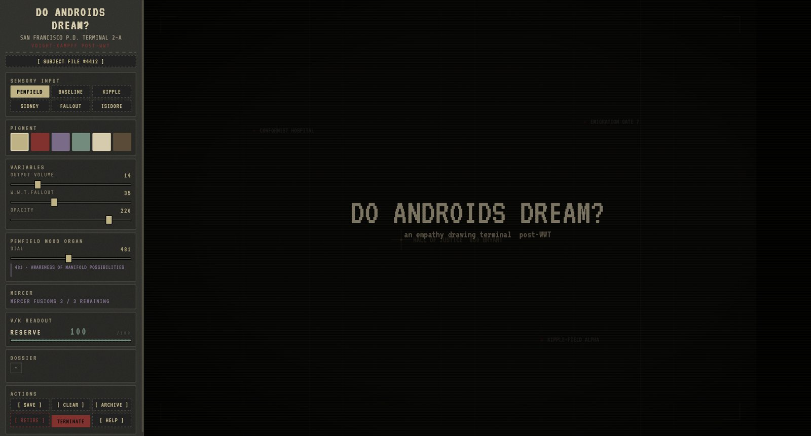
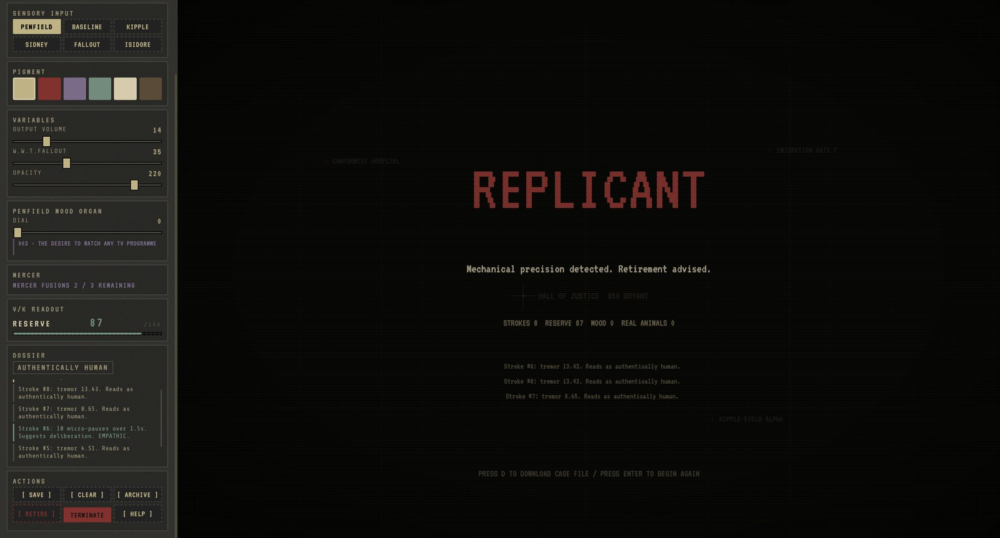

Case File #004
Do Androids Dream?
An empathy drawing terminal, built in p5.js. You draw; the machine watches how you draw (speed, tremor, hesitation) and decides whether a human is holding the mouse.
Concept
The premise
In Philip K. Dick’s Do Androids Dream of Electric Sheep?, the Voight-Kampff test separates humans from replicants by measuring involuntary responses: the flicker in the eye, the half-second delay. Not what you answer. What your body does while you answer.
I wanted to build that as an interface. The obvious version would score your drawing, but that turns an empathy test into a drawing competition and punishes people who can’t draw. So this terminal ignores the picture completely and reads the gesture instead.
Draw slowly, with small pauses, and it reads you as deliberating: EMPATHIC. Let your hand shake and it reads that as authentically human. Sweep across the canvas fast and clean, with no hesitation and near-zero velocity variance, and it flags you. Being too smooth is the thing that gets you caught.
Approach
Five decisions
Measure the hand, not the drawing
The decision the whole project rests onEvery stroke is sampled for velocity while it’s being drawn. On release the sketch computes the mean, the variance (which reads as tremor), the number of micro-pauses, and total duration, then writes a verdict line into a rolling case file in the sidebar.
The thresholds took the longest to tune. Too strict and everyone got flagged; too loose and nothing ever fired. Three pauses over 1.2 seconds turned out to be the point where deliberation becomes detectable rather than accidental.
Build the UI in the DOM, not on the canvas
Why I rejected the p5 defaultMost p5 sketches draw their controls onto the canvas. I put the entire sidebar in real HTML instead, styled with CSS custom properties and wired up through p5’s DOM methods.
Canvas-drawn UI can’t be selected, can’t be reached by a screen reader, can’t inherit a stylesheet, and has to be re-laid-out by hand on every resize. The cost is keeping two rendering systems in sync, worth it for controls that behave like controls.
Two graphics buffers, not one
A performance and persistence problem at once
Strokes accumulate in a persistent createGraphics
buffer, so the drawing survives every frame. The background (layered
grid, radar rings, landmarks, HUD brackets) lives in a second buffer
that’s only rebuilt when the window resizes.
Redrawing that background 60 times a second would have been wasteful for something that never changes. Splitting the buffers also meant I could preserve the user’s work across a resize instead of wiping the canvas, which is what naive p5 resize handling does.
Give the constraint teeth
Consequences the user can’t undoEvery stroke costs empathy reserve, at different rates per brush. Finding a real animal in the Sidney catalogue refunds a little. When the reserve hits zero the electric sheep on the canvas tips over, the text “the sheep died too” appears, and the canvas locks.
A resource that only goes down is a countdown. A resource you can spend carelessly or recover through attention is a choice, and the whole piece is about whether attention counts as feeling.
End with a question the session generated
Making the data personalThe finale reads the session’s usage counters and assembles a question out of what you actually did: how many empathy strokes, how many electric animals you catalogued, how often you dialled the Penfield organ into despair versus euphoria. You answer with one final stroke, and that stroke is analysed for the verdict.
Drew nothing distinctive? It asks you to draw one stroke containing everything you haven’t said. The session then exports as a downloadable case file.
Systems
What’s under it
Six brushes
Each is a different drawing algorithm, not a size preset: Kipple is recursive fractal branching, Baseline draws concentric hexagons with a rotating crosshair, Isidore builds a node network that triggers a vision every 25 nodes.
Penfield Mood Organ
A 0–999 dial that tints every stroke, red toward despair, gold toward euphoria.
The preset readouts are the novel’s own settings: 481 awareness of manifold possibilities, 594 despair, 888 joyous willingness to accept work.
Four custom classes
Dust drifts on Perlin noise rather than linear velocity, so the fallout moves like air rather than like rain.
Five-stage boot
Scan line expands, noise static with scrolling terminal text, HUD brackets fly in, title fades with a glitch pass, then click to begin.
The delay is deliberate. You have to wait to be let in.
MK-02
A draggable electric sheep with a pulsing LED that changes colour with your reserve level, and tips over when it dies.
Keyboard control
1–6 switch brush, arrows resize, S save, C clear, R reset, M force a Mercer fusion, Enter to the finale, D to download the case file.
Interface
The terminal




Debugging
The bug that cost me a day
Fading particles came out solid. Passing a
p5.Color
object into fill()
with an alpha argument doesn’t reliably apply that alpha; the colour
object carries its own, and mine won.
The fix was to stop passing colour objects around and pull the channels apart by hand: read red, green and blue off the source colour, then rebuild it with the alpha I actually wanted. Every fading element in the sketch does this now.
Worth including here because this is the shape of most real front-end debugging: not a logic error, but an assumption about how a library behaves that turns out to be slightly wrong.
Reflection
What I’d change
- No touch support. The whole analysis assumes a mouse. Touch reports velocity differently and the thresholds would need retuning; I’d design for both from the start next time.
- Dead weight in the load. The p5.sound library is imported and never used. Small, but it’s the kind of thing I should catch before shipping.
- The finale questions are hand-written. They’re selected by session data but drawn from a fixed pool. Generating the sentence structure itself would make the ending genuinely unrepeatable.
- One file, 1,500 lines. It stayed navigable because of the comment structure, but the classes and the drawing routines should have been separate modules.